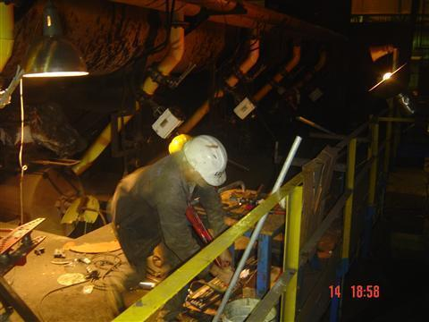
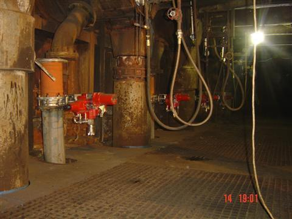
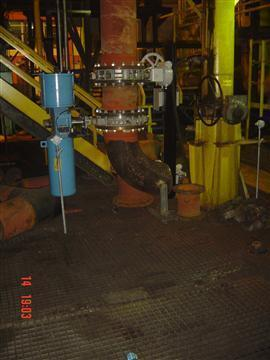
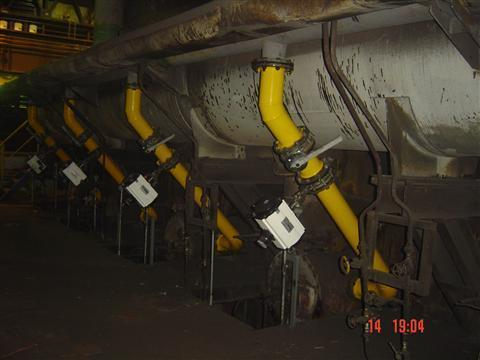

Toggle navigation
About
Projects
Equipment
Contact
Türkçe
Ereğli Demir Çelik Fabrikası T.A.Ş
Home
Projects
Ereğli Demir Çelik Fabrikası T.A.Ş




Previous
Next
Project Description
Pipe rack erection works between boiler and equipments
2nd slab furnace's natural gas conversion piping and cabling works
Project Details
Location: Ereğli, Zonguldak